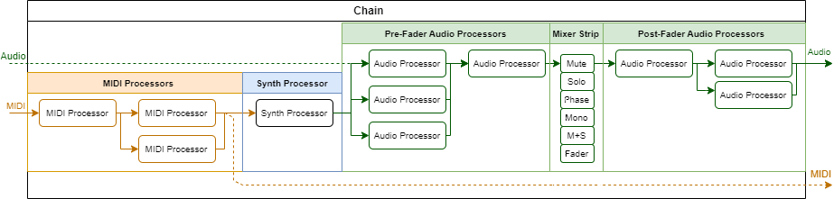
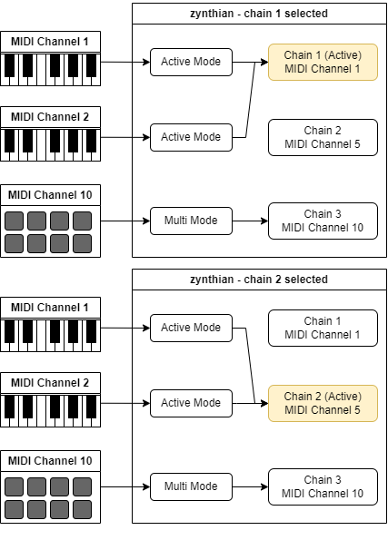
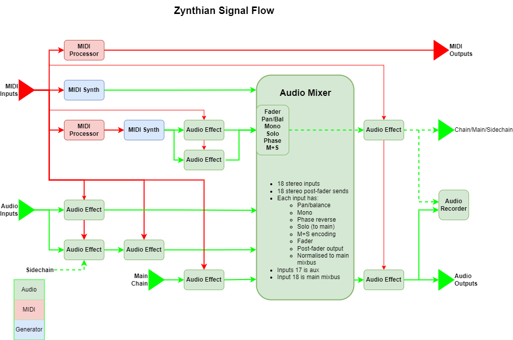

Basic Concepts
This introduction describes the core principles needed for using zynthian. It is essential that you understand these basic concepts.
Knob Actions
There are five knob actions:
 Short Press: Pressing a knob for less of 0.3 seconds triggers the short press action(*).
Short Press: Pressing a knob for less of 0.3 seconds triggers the short press action(*). Bold Press: Pressing a knob for more than 0.3 and less than 2 seconds triggers the bold press action(*).
Bold Press: Pressing a knob for more than 0.3 and less than 2 seconds triggers the bold press action(*). Long Press: Pressing and holding a knob for more than 2 seconds triggers the long press action(*).
Long Press: Pressing and holding a knob for more than 2 seconds triggers the long press action(*). Rotate: Rotating a knob may adjusts a parameter value, change the selected item on a list or move the cursor horizontal or vertically. Knob acceleration allows for finer adjustment at slow rotation and coarser adjustment at faster rotation.
Rotate: Rotating a knob may adjusts a parameter value, change the selected item on a list or move the cursor horizontal or vertically. Knob acceleration allows for finer adjustment at slow rotation and coarser adjustment at faster rotation.- Press + Rotate: Rotating a knob whilst it is pressed may increase the resolution, allowing for fine adjustment.
Button Actions
There are three button actions:
- Short Press: Pressing a button for less of 0.3 seconds triggers the short press action (*).
- Bold Press: Pressing a button for more than 0.3 and less than 2 seconds triggers the bold press action(*).
- Long Press: Pressing and holding a button for more than 2 seconds triggers the long press action(*).
(*) The timing for the press actions can be configured from the webconf tool, in the advanced UI options tab.
Note that not all knobs/buttons have mapped functions for each action type. Knob/button actions can change their function depending of the context. This is documented across the help pages for the different views.
Finally, you can modify the default action map from the webconf tool, accessing the advanced options in the wiring layout section. We don't recommend you do it, but up to you!
Processors & Chains
The fundamental building block of zynthian's sound architecture is the processor. A processor generates or manipulates audio and MIDI signals. Zynthian includes over 1000 processor engines to choose from, classified by type and category.
Processors are grouped together and interconnected within chains. Chains are a key concept in zynthian. The first thing you will do after powering-on your zynthian for first time is to create a chain and add some processors. Zynthian does little without any chains!
Processors may be positioned within the chain in series or in parallel. The quantity of chains or processors in each chain is only limited by available computing power.
By default, audio signals going out from chains feed a stereo mixer with typical mixer strip controls: fader, balance, mute, solo, phase reverse, etc. Audio processors may be positioned pre-fader or post-fader. Note that zynthian treats most audio as stereo. See mixer view for more details.
The audio and MIDI signals are routed between physical inputs, chain inputs, chain outputs, physical outputs and processor side-chain inputs. This provides a lot of flexibility whilst maintaining a simple, chain-based approach to signal routing. See chain manager for details.

Types of processor
There are five processor types:
- Synth: Receives MIDI events and generates audio output.
- MIDI: Receives MIDI events and generates MIDI output.
- Audio: Receives audio input and generates audio output.
- Generator: Generates audio output and has no input.
- Special: Receives MIDI events and audio input and generates MIDI output and audio output.
Each type of processor is categorised to ease user selection. For instance, synth processors have categories: synth, sampler, piano, organ, acoustic & percussion.
Processors have parameters that may be controlled with zynthian knobs or mapped to MIDI CC messages. See chain control for details.
Processors may have presets that may be arranged in banks. See preset view for details.
Types of chain
You can create 8 types of chains:
- Instrument: Receives MIDI events and generates audio output. It's rooted to a synth processor that can't be removed. MIDI and audio processors can be added.
- Audio Input: Receives audio input and generates audio output. It's formed of audio processors only.
- Clip Launcher: Receives internal trigger/stop synced events. It's rooted to an audio clip launcher that generates audio output. Only audio processors can be added.
- MIDI: Receives MIDI events and generates MIDI output events. It's formed of MIDI processors only.
- MIDI + Audio: Use this chain type with hybrid processors that receive MIDI + Audio (Vocoders, Autotune, etc.) or audio to MIDI converters (Onset-Trigger, etc.)
- Audio Generator: It doesn't receive any input. It's rooted to an audio generator processor that generates audio output. Only audio processors can be added.
- Special: Receives MIDI events and audio input and generates MIDI output and audio output. It's rooted to a special processor like puredata.
- Mixbus: Receives audio sent from other chains (sends) and generates audio output. It's formed of audio processors only.
MIDI Input
Instrument and MIDI chains receive events from a configurable set of MIDI inputs. These MIDI inputs can be:
- External MIDI sources: devices connected to DIN-5 and USB connectors or network MIDI devices (RTP-MIDI, QMidiNet, UMP, etc.).
- Internal MIDI sources: the built-in step sequencer, the MIDI player or MIDI output routed from other chains.
MIDI sources can be enabled for each chain separately. Each MIDI input can work in 2 different modes:
Active mode
When a MIDI input is configured in active mode, the active chain receives all MIDI input from it and all MIDI events are translated to the active chain's MIDI channel. This is the default mode for all MIDI inputs. When using active mode you don't need to worry about the MIDI channel your keyboard or controller is using. You change which instruments are played by changing the active chain in your zynthian. See mixer view for details.
Active mode's behavior can be modified by the Active MIDI channel global flag. This may be enabled in the admin menu and has the following behaviour:
- Disabled Active MIDI channel: Only the active chain receives data from the MIDI input in active mode. This is the default setting.
- Enabled Active MIDI channel: All chains with the same MIDI channel as the active chain receive data from the MIDI input in active mode. This is very useful for layering sounds without any extra routing. You simply create several synth chains with the same MIDI channel and they will play in unison. You can also create keyboard splits by adjusting note range and transpose for each chain. See midi key range for details.
Multitimbral mode
When a MIDI input is configured in multitimbral mode, only those chains matching the input's MIDI channel will receive events from this input. No MIDI channel translation is performed. Multitimbral mode allows receiving and managing each MIDI channel individually. Each MIDI input selects the chains it drives using the MIDI channel. If you are using an external sequencer or a MIDI controller that sends on multiple MIDI channels, you may want to use multitimbral mode.

Signal workflow
As introduced above, zynthian's signal workflow is based around chains of audio and MIDI processors that feed an audio summing mixer and MIDI outputs. This diagram gives an overview of signal paths which may help in understanding the flow of audio and MIDI signals.

Snapshots
A snapshot is the captured state of zynthian at the time of saving the snapshot. Snapshots are saved in a JSON file with .zss extension and can be loaded at any time, which effectively restores the state of the zynthian device when the snapshot was saved. Snapshots include:
- Chains layout: configuration of each chain including its processors and how they are arranged and connected
- Audio levels: (optional) physical audio interface settings
- Sequencer: patterns & sequences
- MIDI settings: global MIDI settings, USB MIDI port names, etc.
- Multitrack record settings: mixer strips armed for multitrack recording
- User interface state: some user interface configuration relevant to the snapshot (most UI is configured globally)
- Sub-snapshots: most other configuration. (See ZS3 below.)
Each time you overwrite an existing snapshot file, a backup copy is created. Backups can also be restored at any time, which can avoid much suffering. When you feel the panic, remember that zynthian stores the full save history for all snapshots!
Note: Many zynthian users like to consider a snapshot as a zynthian project. This is not a bad approach.
Sub-snapshots: ZS3
ZS3 means zynthian Sub-SnapShot. A ZS3 is a partial state that is stored in memory and can be recalled very fast. Each ZS3 can easily be associated (or learned) to MIDI Programs, i.e. program change events. Of course, every ZS3 is saved and restored within its snapshot. When a snapshot is first loaded, it uses the default sub-snapshot called, ZS3-0.
See ZS3 view to learn how to save and restore ZS3s with MIDI Program Change messages, manage ZS3s in stage and much more.
Each ZS3 includes:
- Chains configuration: For each chain: MIDI channel, note-range, transpose, etc.
- Processors state: For each processor: bank, preset & parameter values.
- Mixer settings: For each mixer strip: fader, balance, mute, solo, etc.
- MIDI devices configuration: Active / multitimbral mode, etc.
- MIDI & Audio routing: Connections between chains.
- MIDI learning: MIDI bindings to processor parameters.
- Global settings: Some settings that can be changed by ZS3, e.g. MIDI transpose. (Most global settings are not changed by ZS3.)
- Active chain: The chain that was active when the ZS3 was saved.
The key concept to understand for ZS3 is that the chains layout is not stored in a ZS3, i.e. the chains layout is not modified when restoring a ZS3. You can't add or remove chains or processors by restoring a ZS3 because this is a slow operation and a ZS3 needs to be restored very fast. When loading a full snapshot, all the chains and processors are created. Later, when recalling a ZS3 within that snapshot, the chains layout will remain the same. Although a ZS3 can modify routing, splits, banks, presets, etc., the quantity of chains and processors will remain unchanged.
Note: For instance, if you are keyboardist that plays with several bands, you could have a snapshot for each band with a ZS3 for each song.